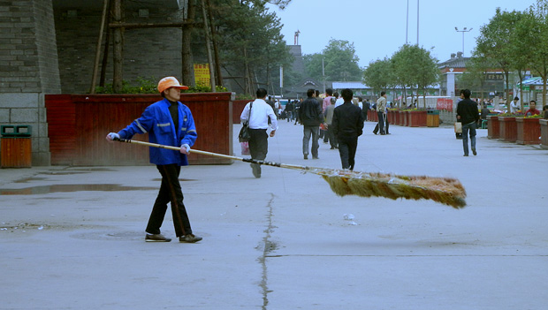
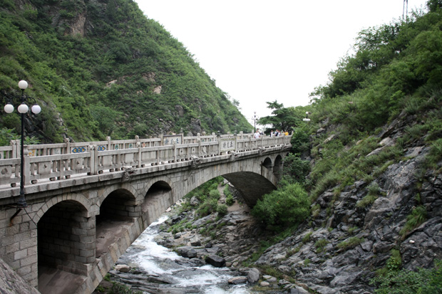
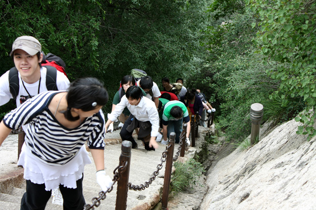
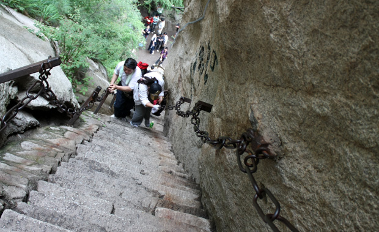
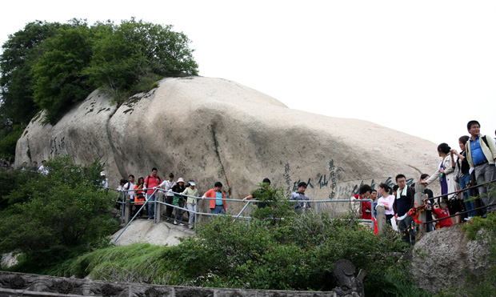

西安也好，华山也好，天都是灰蒙蒙的，几天下来，拍的照片也都灰蒙蒙的。放上几张作为旅行记录。

西安第一印象——西安火车站。清洁工挥动超大超长的扫把，扬起漫天尘土。

华山脚下，五龙池。难得一见的清澈溪流。我们是全车唯一在玉泉院下车准备全程爬山的游客。

之前以为去华山必须准备手套有些夸张，去了才知道，一副手套绝对是必须的。华山好多地方的台阶都接近75度，绝对的手脚并用，绝对是爬山不是登山。

千尺潼百尺峡。我们遇到的第一处险关。石阶都很浅，只能放下半只脚，还有多处积水，随时可能打滑。不过只要拉稳两边的铁链，就很安全了。

人最多的地方，索道上来的游客全都挤在北峰，而擦耳崖是北峰往上的第一个景点。古代的时候这里没有石阶，只有刚好一肩宽的小道，从这里经过，必须紧紧贴着一旁的峭壁，擦着耳朵过，因此得名。